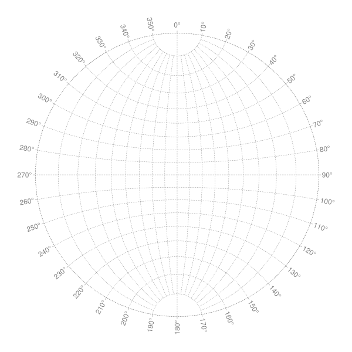
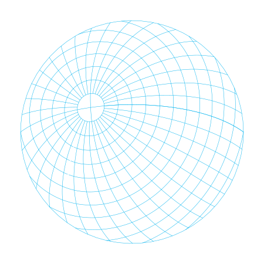
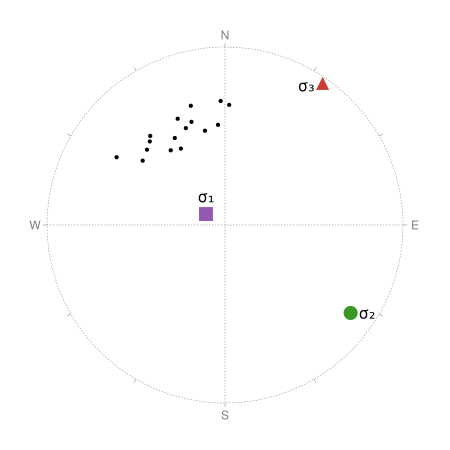
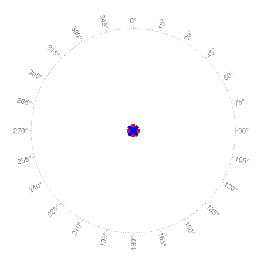
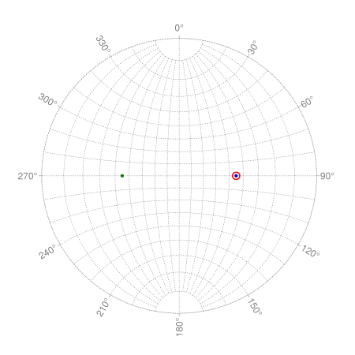
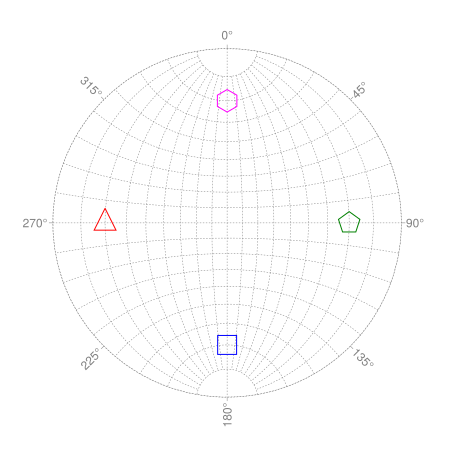
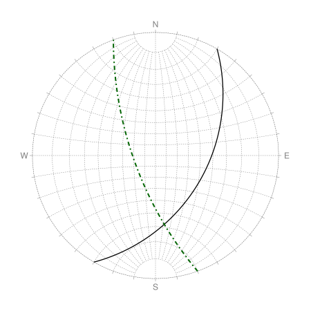
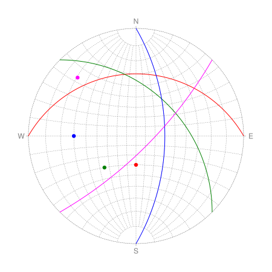
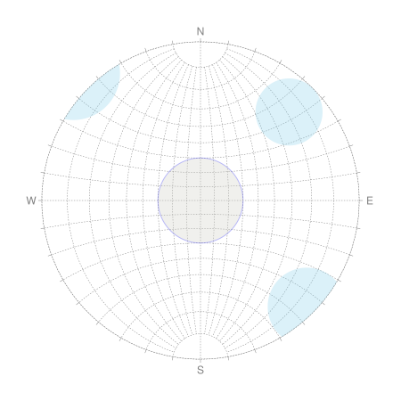
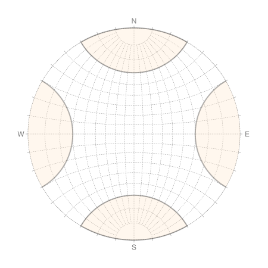

Backend Activation
Remember to call a specific backend to render your plots:
using Stereonet
using CairoMakie, GLMakie
CairoMakie.activate!()
# plot and save with CairoMakie
GLMakie.activate!()
# plot and save with GLMakieCreating a Stereonet
Create a stereonet with default attributes:
using Stereonet
using CairoMakie
h = hemi()
Grid and Frame Attributes
Attributes are defined as keyword arguments. The following table describes each attribute:
| Attribute | Description |
|---|---|
net::Symbol | Projection type: :wulff (equiangular) or :schmidt (equal-area). Default: :wulff |
sstep::Int | Angular spacing (degrees) for the small-circle grid. Default: 10 |
gstep::Int | Angular spacing (degrees) for the great-circle grid. Default: 10 |
view::Tuple{Real,Real} | Viewing direction as (trend, plunge) in degrees. Default: (0, 90) (vertically downward) |
acor::Real | Additional rotation angle (degrees) around the z-axis, applied after the view transformation. Default: 0 |
frame::Symbol | Frame consisting of NS and EW vertical planes when view = (0, 90). Options: :show or :hide. Default: :show |
grid::Symbol | Whether to draw the stereonet grid. Options: :show or :hide. Default: :show. Note: grid cannot be :show when frame is :hide; this combination resets grid to :hide with a warning |
size::Tuple{Int,Int} | Figure size in pixels. Default: (600, 600) |
grid_color::Symbol | Color for grid and frame elements. Default: :gray |
grid_linestyle::Symbol | Line style for grid and frame elements. Default: :dash |
grid_linewidth::Real | Line width for grid and frame elements. Default: 0.5 |
grid_alpha::Real | Transparency for grid and frame elements (0.0–1.0). Default: 1.0 |
ticks::Symbol | Marks and labels drawn around the stereonet's outer circle. Options: :deg (degrees), :car (cardinals) or :hide. Default: :deg |
tstep::Int | Angular spacing (degrees) between tick marks, must divide 360. Default: 10 |
tlen::Real | Length of the tick marks as a fraction of the radius; only used when ticks = :deg. Default: 0.015 |
font::Union{Symbol, String} | Sets the ticks font. Can be a Symbol which will be looked up in the fonts dictionary or a String specifying the (partial) name of a font or the file path of a font file. Default: :regular |
fontsize::Int | Sets the ticks fontsize. fontsize::Int: Font size used for stereonet labels, in points. Recommended maximum values are 8 pt for figures of 200 × 200 pixels, 12 pt for 300 × 300 pixels, 13 pt for 400 × 400 pixels, and 14 pt for 500 × 500 pixels. For larger figures (600 × 600 pixels or above), a maximum of 15 pt is suggested. Default: 12 |
Net view direction
Nets are usually displayed with the primitive oriented horizontally (viewed from above). With the attribute view, a net can be generated from any desired direction:
using Stereonet
using CairoMakie
h = hemi(
net = :schmidt,
view = (30, 20),
grid = :show,
size=(450, 450),
frame = :show,
grid_color=:deepskyblue2,
grid_linestyle=:solid
)
Plotting Linear Features
Linear features are plotted using lineations!:
using Stereonet
using CairoMakie
trends = [302, 318, 330, 342, 358, 308, 324, 336, 348, 002, 314, 330, 344, 356, 320, 338]
plunges = [29, 37, 43, 39, 31, 41, 47, 35, 45, 33, 39, 49, 31, 43, 35, 41]
h = hemi(net = :schmidt, size=(450, 450), grid=:hide, ticks=:car, tstep=30, fontsize=12)
lineations!(h, trends, plunges)
trend = [35, 125, 300]
plunge = [5, 15, 80]
color = ["#CB3C33", "#389826", "#9558B2"]
marker = [:utriangle, :circle, :rect] # or ['▲', '●', '■']
markersize = [18, 20, 22]
labels = ["σ₃", "σ₂", "σ₁"] # or [L"\sigma_3", L"\sigma_2", L"\sigma_1"]
align=[(:right, :center), (:left, :center), (:center, :bottom)]
offset=[(-8, 0), (8, 0), (0, 8)]
for (t, p, c, m, ms, l, a, o) in zip(trend, plunge, color, marker, markersize, labels, align, offset)
lineations!(h, t, p, color=c, marker=m, markersize=ms,
labels=l, align=a, offset=o, fontsize=16)
end
h
Linear Features Attributes
lineations! attributes are defined as keyword arguments. The following table describes each attribute:
| Attribute | Description |
|---|---|
form::Union{Symbol, AbstractVector{Symbol}} | Whether linear features are treated as axes or vectors: :a (axes) or :v (vectors). Default: :a |
color::Symbol | Fill color of the marker. Default: :black |
markersize::Real | Size of the marker. Default: 6 |
The North-East-Down (NED) coordinate system is used, where positive plunges point downward and negative plunges point upward.
For linear data, hemisphere selection is encoded in the orientation of the lineation. The form parameter determines whether antipodal directions are distinguished:
:a(axis): represents an unoriented line. Directions pointing into the upper hemisphere are plotted at their antipodes on the lower hemisphere.:v(vector): represents an oriented lineation. Its direction is preserved, allowing upper- and lower-hemisphere directions to be distinguished.
Behavior with positive plunge:
- Both
:aand:vplot the point at the same location on the lower hemisphere.
using Stereonet
using CairoMakie
h = hemi(net = :wulff, view = (0, 90), grid=:hide, frame=:hide,
size=(450, 450), fontsize = 12, tstep = 15)
lineations!(h, [90, 90], [90, 90],
form = [:v, :a], color = [:red, :blue],
marker=['✚', '✖'], markersize=30)
h
Behavior with negative plunge:
:aplots the antipodal point on the lower hemisphere.:vpreserves the original direction and plots the point on the upper hemisphere.
using Stereonet
using CairoMakie
h = hemi(net = :wulff, view = (0, 90), size = (450, 450), fontsize = 12, tstep = 30)
lineations!(h, [90], [-45], form = [:a], color = :green)
lineations!(h, [90], [-45], form = [:v], color = :red)
lineations!(h, [90], [45], form = [:v], color = :blue)
h
The examples above assume the reference view, view = (0, 90), with zero azimuth correction (acor = 0). When a different view or azimuth correction is applied, the original coordinates are rotated before hemisphere selection. Therefore, the hemisphere is determined by the vector's vertical component in the rotated coordinate system, not simply by the sign of its original plunge.
When using :v, hollow markers can be used to distinguish vectors that point into the upper hemisphere from those pointing into the lower hemisphere. By default, upper-hemisphere vectors are displayed with hollow circles, while the remaining lineations use filled circles.
You can customize the default attributes, as shown in the following example:
using Stereonet
using CairoMakie
h = hemi(net = :wulff, view = (0, 90), size=(450, 450), fontsize=12, tstep=45)
lineations!(h, [0, 90, 180, 270], [-20, 20, -20, 20], form = [:a, :v, :a, :v],
color = :transparent,
strokewidth = 1,
marker = [:rect, :pentagon, :hexagon, :utriangle],
markersize = 30,
strokecolor = [:blue, :green, :magenta, :red])
h
Plotting Planar Features
Planar features are plotted using traces!:
using Stereonet
using CairoMakie
h = hemi(net = :wulff, view = (0, 90), size=(450, 450), ticks=:car, fontsize=12)
traces!(h, 120, 45) # strike=120°, dip=45°
traces!(h, [250], [70], color=:darkgreen, linestyle= (:dashdot, :dense), linewidth=2)
h
Planar Features Attributes
traces! attributes are defined as keyword arguments. The following table describes each attribute:
| Attribute | Description |
|---|---|
hemi::Symbol | Hemisphere in which to plot. Options: :lower or :upper. Default: :lower |
view::Symbol | Whether to represent planes as traces or poles. Options: :trace or :pole. Default: :trace |
polecolor::Symbol | Fill color of the pole. Default: :black |
polealpha::Real | Alpha value of the pole fill color. Default: 1.0 |
strokecolor::Symbol | Stroke color for pole outlines. Default: :black |
strokewidth::Real | Line width for pole outlines. Default: 0 |
linecolor::Symbol | Line color for traces. Default: :black |
linewidth::Real | Line width for traces. Default: 1.3 |
linealpha::Real | Line alpha value for traces. Default: 1.0 |
Plane traces are invariant under hemisphere–dip sign changes; for example, (dipdir, dip, hemi = :upper) and (dipdir, -dip, hemi = :lower) produce identical great-circle traces.
Example: Multiple Planes
using Stereonet
using CairoMakie
h = hemi(size=(450, 450), ticks=:car, tstep=90, fontsize=12)
# Plot multiple planes
strikes = [0, 45, 90, 135]
dips = [30, 45, 60, 75]
colors = [:red, :green, :blue, :magenta]
for (strike, dip, c) in zip(strikes, dips, colors)
traces!(h, strike, dip, color=c, linewidth=1)
traces!(h, strike, dip, color=c, view=:pole)
end
h
Small Circles
Small circles are conical sections on a sphere, defined by the axis trend and plunge, and the cone's half-angle.
using Stereonet
using CairoMakie
h = hemi(size=(450, 450), ticks=:car, fontsize=12)
# Single small circle
smallc!(h, 0, 90, 30, draw=:line, color=:blue, linewidth=1) # Draw as line
smallc!(h, 0, 90, 30, draw=:poly, color=:ivory3) # Draw as filled polygon
# Multiple small circles
trends = [45, 135]
plunges = [15, 5]
half_angles = [15, 15]
smallc!(h, trends, plunges, half_angles, draw=:poly, color=:skyblue)
h
Small Circles Features Attributes
smallc! attributes are defined as keyword arguments. The following table describes each attribute:
| Attribute | Description |
|---|---|
draw::Symbol | Drawing mode. Options: :line (circle outlines) or :poly (filled circles). Default: :line |
fill::Symbol | Fill color of circles. Default: :skyblue1 |
polyalpha::Real | Alpha value of the fill attribute. Default: 0.3 |
linecolor::Symbol | Line color for circle outlines. Default: :black |
linewidth::Real | Line width for circle outlines. Default: 1.3 |
linealpha::Real | Line alpha value for circle outlines. Default: 0.5 |
Why :line and :poly?
When a small circle intersects the primitive circle outlining the resulting polygons produces visually poor results. The :line option avoids this by allowing the trace to terminate cleanly at the primitive circle.
using Stereonet
using CairoMakie
h = hemi(size=(450, 450), ticks=:car, fontsize=12)
# Poor result
smallc!(h, 0, 0, 30, draw=:poly, color=:bisque, strokecolor=:black, strokewidth=2)
# Better!
smallc!(h, 90, 0, 30, draw=:poly, color=:bisque)
smallc!(h, 90, 0, 30, draw=:line, color=:black, linewidth=2)
h
Saving Plots
Stereonet uses Makie's saving functionality. The output format is determined by the file extension, and CairoMakie is sufficient to save plots in any format (PNG, SVG, PDF). No backend switch is needed.
using Stereonet
using CairoMakie
h = hemi(size=(450, 450), fontsize=12)
# ... add your data ...
# Vector formats — ideal for publications and presentations
save("path/to/folder/some_plot.pdf", h)
save("path/to/folder/some_plot.svg", h)
# Raster format — ideal for web pages and quick previews
save("path/to/folder/some_plot.png", h)
# Higher resolution (4x)
save("path/to/folder/some_plot.png", h, px_per_unit = 4)
# Very high resolution (6x)
save("path/to/folder/some_plot.png", h, px_per_unit = 6)- Use PDF or SVG for publications and presentations (scalable, no quality loss).
- Use PNG for web pages and quick previews.
- Increase
px_per_unitfor higher resolution PNGs (values of 2–6 work well). - Default size is 600×600 pixels; change it with
size=(width, height)inhemi().
Saving plots works with CairoMakie alone. If you also want to display the figure in an interactive window while working in the REPL, activate GLMakie instead:
using GLMakie
GLMakie.activate!()
h = hemi(size=(300, 300))
# ... add your data ...
h # opens an interactive windowThis is only needed for interactive exploration — not for saving files, and not for building this documentation (which uses CairoMakie).